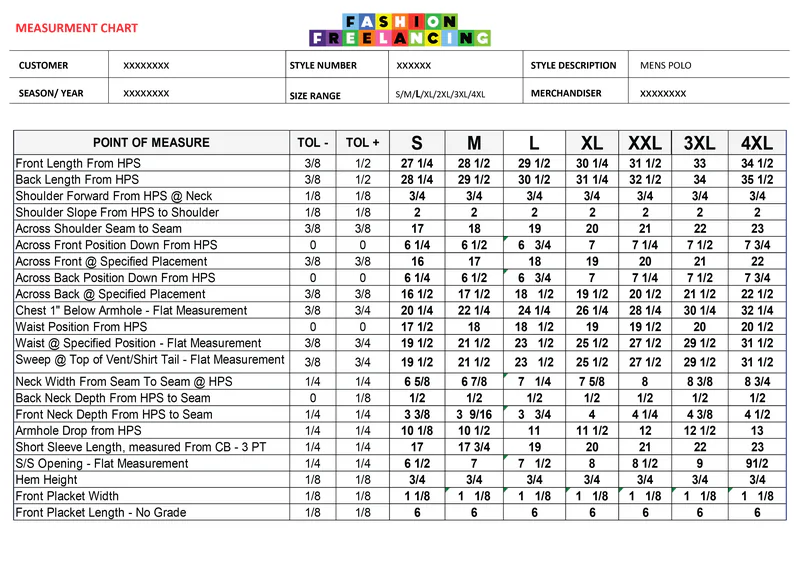

Base pattern — production draft
Drafted to your spec with fabric-appropriate ease, ready for the sample room.
CAD pattern job work for knit and woven styles — graded size sets, seam allowances per seam, notches and markers, in a file your unit can cut from or plot 1:1.
6 rows don’t grade at all — shoulder forward ¾″, shoulder slope 2″, placket length.
Cut line, sew line, notches, grainline — the drawing a cutter trusts.
GerberLectraGemini RichpeaceWindaDXF · AAMAYou sew the sample; we correct the pattern from your fit notes. Two rounds are part of the price, not an extra.
Send your tech pack, sketch or a sample garment — plus your factory’s CAD system if you know it.
One number covering drafting, grading and every file format listed above.
You sew the sample with your factory; we take your fit notes and correct the pattern — two rounds included.
Full size set, cutter’s must, native + DXF files — and ownership transferred to you.
A pattern is not a drawing of a garment. It is a set of instructions a cutting room follows without asking you anything.
Drafted to your spec with fabric-appropriate ease, ready for the sample room.
Your full size range with consistent grade rules — nested file plus individual sizes.
Not a blanket 1cm — allowances set to your construction, seam by seam.
Placed for the sewing line, so panels match at the machine, not just on screen.
Piece list, cut quantities, fabric/fusing/lining split — the sheet the cutting room asks for.
Pattern measured against your tech pack spec at base size, documented.
None of them shows up in a picture of the garment — and all three are set before a single panel is cut.
Scaling a pattern up is not grading it. A grade moves every point by its own rule: the chest grows two inches a size, the shoulder slope not at all. Scale the whole piece and the neck grows with it — which is how a 4XL gets a collar nobody can wear.
Don’t know what your factory uses? Ask them one question — “what CAD system do you cut from?” — and forward us the answer.
DXF with AAMA/ASTM carries the grade rules — plain DXF often does not. Free with every job, and we convert what you have: Gerber .tmp, Lectra .iba/.mdl, Investronica .exp, Assyst .zip, PLT, CUT.

Two markers, not one. A costing marker to price the style and fix dia and consumption, then the production marker the cutting room lays on the table. Both plot 1:1 on brown paper.
Native files for Gerber AccuMark, Lectra Modaris, Optitex, Tukatech and CLO3D, plus universal DXF (AAMA/ASTM) that any modern CAD system imports, and print-at-scale PDF for sampling. Tell us what your factory runs and we deliver to it — if you don't know, we'll tell you exactly what to ask them.
A tech pack is ideal, but a clear sketch with measurements works — and if you have a sample garment that fits the way you want, that's gold. We'll tell you within 24 hours if anything is missing before we quote.
Yes — graded size sets with your grade rules or industry-standard rules for your market, delivered as a nested file plus individual sizes. One thing we'll always be honest about: grading scales a pattern, it can't fix one. Fit is settled at the base size first.
That's the whole job. Every pattern ships with a measurement check against your spec at the base size, seam allowances marked per your construction, and notches and drill marks placed for the sewing line — the things factories reject patterns for.
You do. Patterns, blocks and grade rules are your property on final payment — you can take them to any factory, any time. We never reuse a client's block for someone else.
Fit corrections after your sample review, measurement adjustments, seam allowance or notch changes — most patterns are approved by round one. A different garment is a new brief, quoted honestly in advance.
Yours, if you have one — send the size chart or the graded spec from your tech pack and the grade rules follow it point by point. If you do not have one yet, we draft a rule set for your garment type and size range, show you the steps before grading, and it becomes your brand's rule set to reuse.
Yes. A garment we can measure is often the clearest brief there is — we measure it flat, draft the pattern to those measurements with the ease the fabric needs, and flag anything in the original that would not sew cleanly in production.
Would you rather hire one person? Our team drafts and grades patterns end to end — or you can brief an approved Pattern Making specialist directly from our curated network.
Find a Pattern Making specialistTell us the garment and your size range — fixed quote within 24 hours.